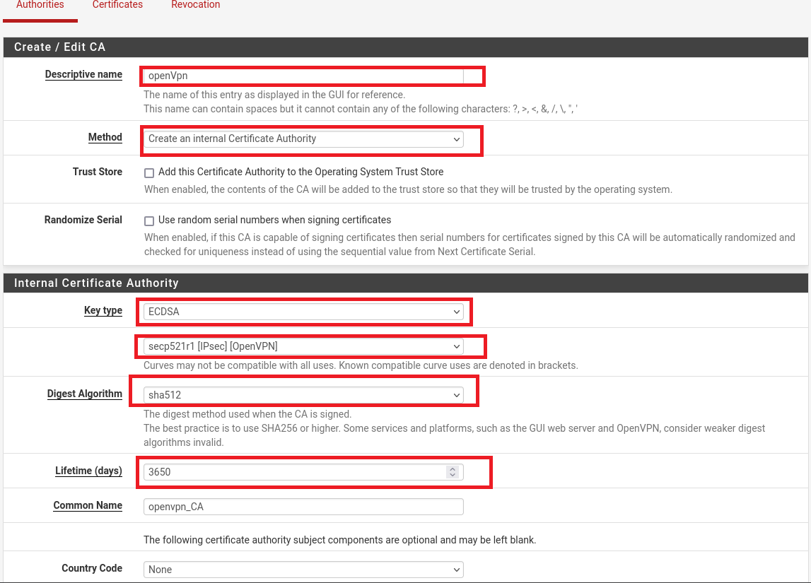
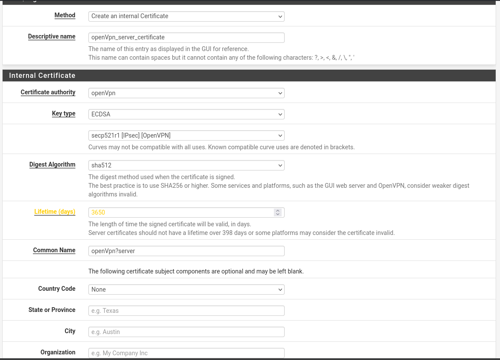
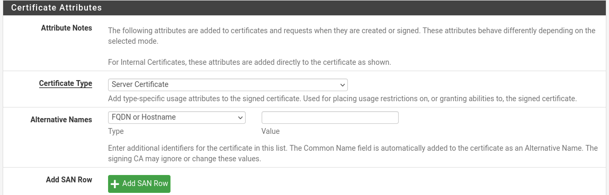
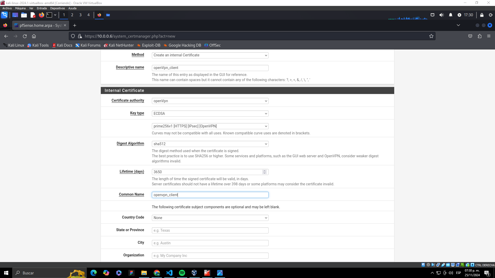
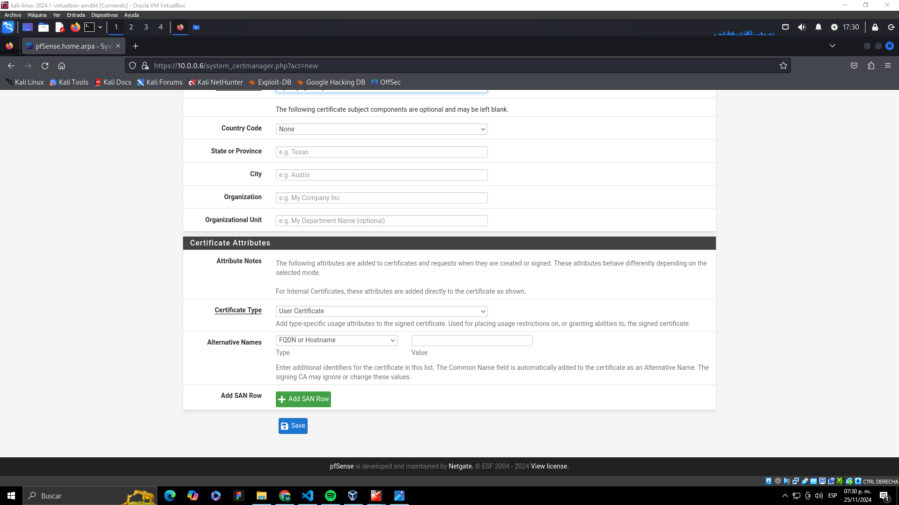
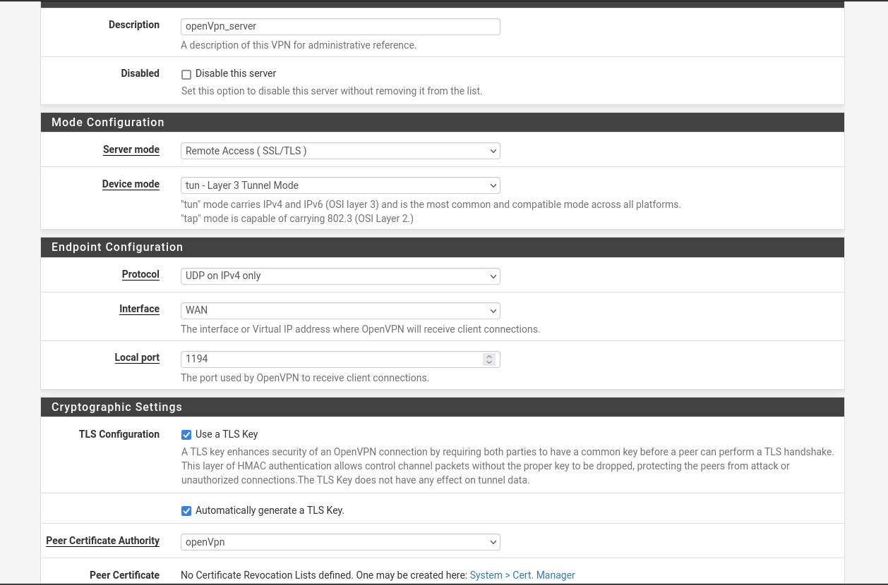
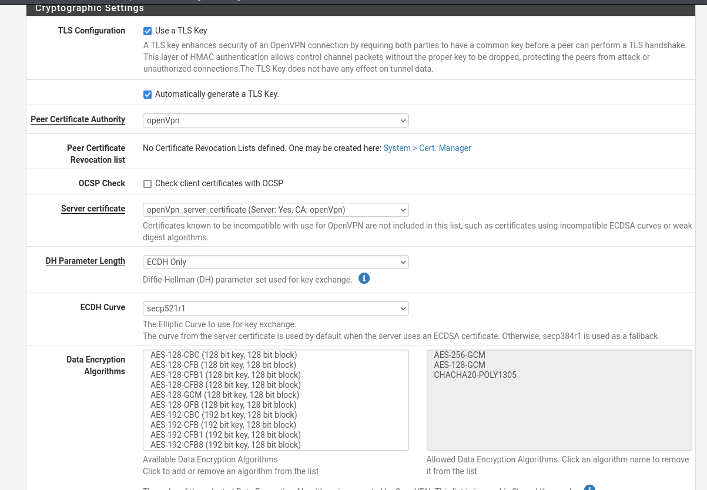
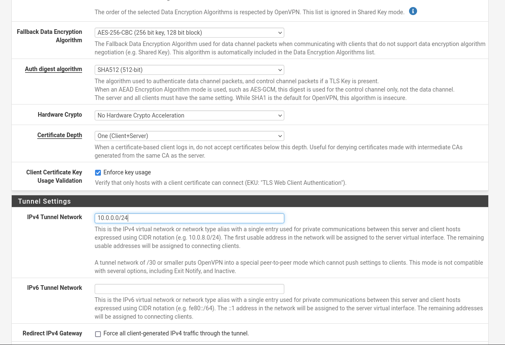
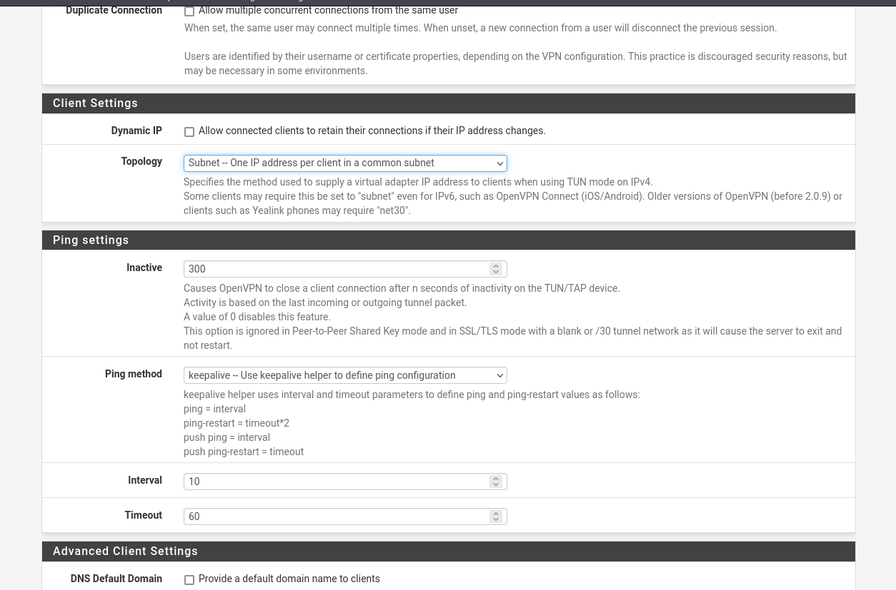
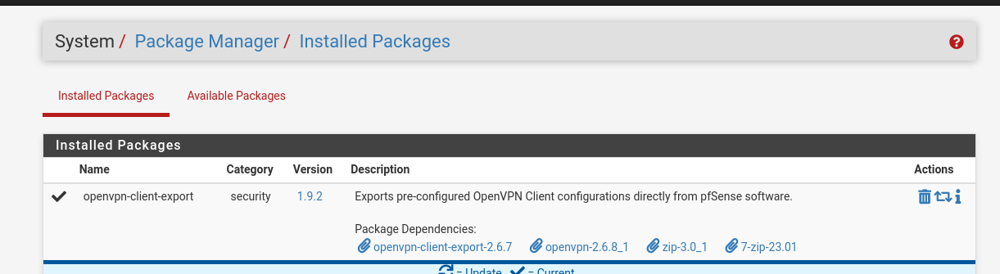

Configuración de OpenVPN en pfSense 📡🔑¶
Este tutorial te voy a guiar paso a paso como dejar listo un servidor openVpn, y crear los certificados para que los clientes se puedan conectar
Crear una Autoridad Certificadora (CA)¶
Lo primero que tenemos que crear es la autoridad certificadora, basicamente esta autoridad es la entidad que va a verificar los certificados entre la concexion vpn, generando confianza entre ambos.
-
Accede a la interfaz web de pfSense:
- Ingresa a
http://<IP_de_pfSense>en tu navegador. - Inicia sesión con tus credenciales de administrador.
- Ingresa a
-
Dirígete a System > Cert. Manager > CAs.
-
Haz clic en Add para crear una nueva CA. Configura los siguientes campos:
- Create /Edit CA
- Descriptive Name: ponemos un nombre descriptivo a esta CA, el que nosotros queramos.
- Method: Create an internal Certificate Authority.
- Internal Certificate Authority
- Key type: ECDSA con secp521r1 que es compatible con OpenVPN.
- Digest Algorithm: sha512
- Lifetime Days: 3650 (10 años)
- Common-name: el CN debe ser un nombre descriptivo, que describa inequívocamente a esta CA. En nuestro caso solamente tenemos una CA para OpenVPN, así que hemos puesto simplemente «openvpn-ca»
- Country Code: none. Esto ya no es necesario rellenarlo en los nuevos certificados de OpenVPN.
- Create /Edit CA
En cuanto al porque la eleccion de la criptografia, ECDSA (Elliptic Curve Digital Signature Algorithm) es preferido sobre RSA porque proporciona una seguridad equivalente con claves significativamente más pequeñas, lo que reduce el consumo de recursos y mejora el rendimiento, especialmente en dispositivos con menos capacidad. Por ejemplo, una clave ECDSA de 521 bits ofrece una seguridad comparable a una clave RSA de 15,360 bits. Además, las curvas elípticas como secp521r1 son reconocidas por su robustez criptográfica contra ataques basados en factorización o logaritmos discretos.
El uso de SHA-512 como algoritmo de hash garantiza una alta resistencia frente a colisiones (situaciones donde dos entradas diferentes producen el mismo hash), gracias a su salida de 512 bits. Esto añade un nivel adicional de integridad y seguridad al proceso de firma. Combinando estos elementos, se logra una configuración moderna, eficiente y altamente segura, ideal para proteger conexiones VPN .

Haz clic en Save para guardar la CA.
Crear un Certificado de Servidor¶
Ahora tenemos que crear el certificado del servidor, esto es para crear la "identidad digital" del servidor, la misma autentica al servidor ante los clientes.
- Ve a System > Cert. Manager > Certificates.
Vas a ver que ya hay un certificado creado, este corresponde al certificado ssl para que la pagina web funcione sobre https.
¿Por que aparece que la pagina no es segura? === Porque el certificado esta autofirmado.
- Haz clic en Add y selecciona los siguientes parámetros:
- Create /Edit CA
- Descriptive Name: ponemos un nombre descriptivo.
- Method: Create an internal Certificate.
- Internal Certificate
- Key type: ECDSA con secp521r1 que es compatible con OpenVPN.
- Digest Algorithm: sha512
- Lifetime Days: 3650 (10 años)
- Common-name: el CN debe ser un nombre descriptivo
- Country Code: none. Esto ya no es necesario rellenarlo en los nuevos certificados de OpenVPN.
- Certificate Attributes:
- Certificate Type: server certificate
- Alternative Name: lo podemos dejar sin nada, completamente vacío.
- Create /Edit CA


Haz clic en Save para crear el certificado.
Crear Certificado de Cliente¶
Ahora vamos a crear el certificado de cliente, este certificado vas a tener que crearlo, cada vez que quieras habilitar una conexion vpn nueva.
-
Ve a System > Cert. Manager > Certificates.
-
Haz clic en Add y selecciona los siguientes parámetros:
- Create /Edit CA
- Descriptive Name: ponemos un nombre descriptivo.
- Method: Create an internal Certificate.
- Internal Certificate
- Key type: ECDSA con secp521r1 que es compatible con OpenVPN.
- Digest Algorithm: sha512
- Lifetime Days: 3650 (10 años)
- Common-name: el CN debe ser un nombre descriptivo
- Country Code: none. Esto ya no es necesario rellenarlo en los nuevos certificados de OpenVPN.
- Certificate Attributes:
- Certificate Type: user certificate
- Alternative Name: lo podemos dejar sin nada, completamente vacío.
- Create /Edit CA


Haz clic en Save para crear el certificado.
Configurar el Servidor OpenVPN¶
-
Dirígete a VPN > OpenVPN > Servers y haz clic en Add para agregar un nuevo servidor OpenVPN.
-
Configura los campos principales como sigue:
- General Information
- Description: Descripcion acorde a la vpn.
- Mode Configuration:
- Mode Access: Remote access (SSL/TLS)
- Device Mode: tun
- Enpoint Configuration:
- Protocol: UDP (elegi esta opcion para evitar ataques de DDoS).
- Port: 1194 (para metodos didacticos dejamos el puerto por defecto, pero se recomienda cambiarlo)
- Interface: WAN Cryptographic Settings:
- Server certificate:Aca colocaremos el certificado de serrvidor que creamos anteriormente
- DH Parameter Length: Colocar solo curvas ECDH
- ECDH Curve: Yo deje la misma curva que habiamos colocado anteriormente, para moayor seguridad.
- Data Encryption Algorithms: Ya por defecto vienen seleccionados los 3 algoritmos que me parecieron los mas fuertes
- Fallback Data Encryption Algorithm: Yo deje como fallback AES-256-CBC, igualmente recomiendo dejar AES-256-GCM, si hay dispositovos que no soporten este algoritmo la mejor practica seria actualizarlos.
- Auth digest algorithm: SHA-512
- Certificate Depth: Colocar ONE(Client + Server)



- General Information
Dentro de estas configuraciones podremos tambien limitar a que redes se podra conectar nuestro servidor vpn para asi poder limitar el acceso a nuestra red IPv4 Local network(s), asi como tambien la cantidad de conexiones activas al mismo tiempo en Concurrent connections.

Finalmente seleccionaremos como toplogia subnet, siendo esta mas efectiva que net30
Haz clic en Save y luego en Apply Changes.
BONUSTRACK: Exportar la Configuración del Cliente OpenVPN¶
- Instala el paquete OpenVPN Client Export Utility:
- Ve a System > Package Manager > Available Packages.
- Busca
openvpn-client-exporty haz clic en Install.

Ve a VPN > OpenVPN > Client Export
- Vamos hasta el final en donde diga OpenVpn Clients
- Recomiendo exportar la configuración haciendo click en most clients
Probar la Conexión¶
-
En un dispositivo cliente, instala un cliente OpenVPN (como OpenVPN Connect).
-
Importa el archivo
.ovpndescargado y conecta al servidor. -
Verifica que la conexión sea exitosa y que puedas acceder a los recursos necesarios.
¡Con esto, tu servidor OpenVPN en pfSense estará configurado y listo para ser utilizado!